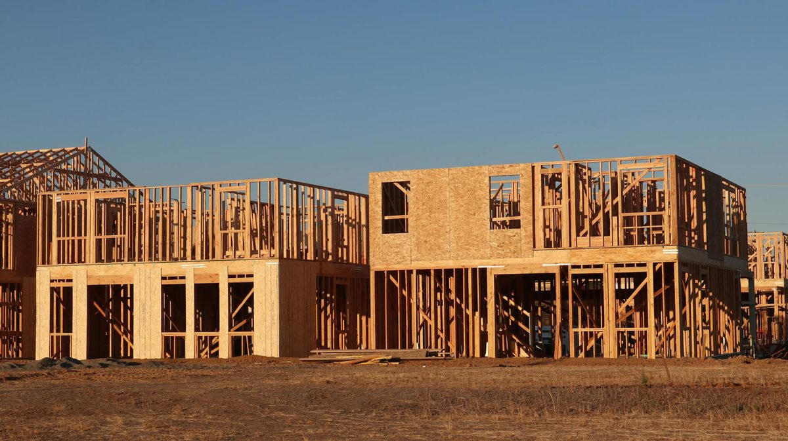

The rim joist - the band of framing that runs around the perimeter where the floor system sits on the foundation - is the single biggest source of air leakage in a typical Knoxville home. In older Bearden bungalows, Powell ranches, and West Knoxville splits, you can often feel cold air streaming through the rim joist on a February night. Two inches of closed cell spray foam in that cavity seals it permanently, hits R-14, and creates an air and vapor barrier in one step. Rim joist spray foam is the highest-ROI insulation upgrade available in Knoxville - small dollars, big comfort gain.

Blower-door testing across hundreds of Knoxville homes shows the same pattern: the rim joist leaks more air per square foot than any other assembly. The reasons are simple. The sill plate sits on a concrete foundation wall with no air seal between them. Floor joists land on the rim with gaps. Wiring, plumbing, and HVAC penetrations cross the rim with no sealant. Older Knoxville homes (anything pre-1990) usually have nothing in the rim joist cavity at all - just framing, sheathing, and outdoor air a few inches away. When you stand in a Knoxville basement on a January morning you can often see daylight at the sill.
Two inches of closed cell spray foam in the rim joist cavity solves all of it in one shot. The foam seals the sill-to-foundation gap, fills around penetrations, bonds to the rim board, and creates an air barrier, vapor retarder, and insulation layer simultaneously. For a typical Knoxville 1,500 sq ft home, the rim joist project is 150-200 linear feet of cavity, takes half a day, and runs $800-$2,500 total.
Knoxville rim joist spray foam runs $5 to $12 per linear foot of rim joist in 2026. A typical 1,500 sq ft single-story Knoxville home has 150-170 linear feet of rim, putting the total at $800 to $2,000. Two-story homes with multiple rim joist runs (between floors and at the foundation) cost $1,500 to $3,500.
| Home Size | Typical Rim Joist Cost |
|---|---|
| 1,000 sq ft ranch | $650 - $1,400 |
| 1,500 sq ft ranch | $900 - $2,000 |
| 2,000 sq ft ranch | $1,200 - $2,500 |
| 2,000 sq ft two-story | $1,800 - $3,500 |
| 2,500+ sq ft two-story | $2,200 - $4,500 |
| Old fiberglass batt removal | Usually included |
Rim joist work qualifies for the federal 25C Energy Efficient Home Improvement Credit - 30 percent back on insulation up to $1,200 per year. Often packaged with crawl space encapsulation for the best per-dollar result.
Use closed cell. The rim joist sits at a critical moisture interface - cold sheathing on the outside, warm humid living space air on the inside. Open cell would allow vapor through to the cold rim, where it would condense. Closed cell stops vapor at the inboard face of the foam, before it reaches the cold sheathing. This is a settled question in cold-climate building science. See our closed cell page for the spec.
Knoxville's older housing stock - the 1920s-1950s homes around Old North Knoxville, Sequoyah Hills, Fountain City, and Bearden - was built with little or no rim joist insulation. Many had small ventilation gaps cut at the sill plate that have since become major air leaks. The 1970s-1990s ranches in Powell, Karns, and West Knoxville used kraft-faced fiberglass batts in the rim that have universally fallen out by now. We frequently combine rim joist work with full crawl space encapsulation - the access, prep, and cleanup overlap, so bundling saves the homeowner roughly 25 percent versus separate jobs. Termite-treated zones in Knox County require the standard 3-inch visible inspection gap between the top of any foam on the foundation wall and the sill plate, which does not affect rim joist application.
Call (865) 564-7823 - Mon-Sat 7AM-7PM. Same-day written quotes available.
This website provides information for Knoxville TN spray foam insulation services. Inquiries are routed to licensed local spray foam installers in the Knoxville area. We are an advertising service and connect homeowners with vetted contractors.